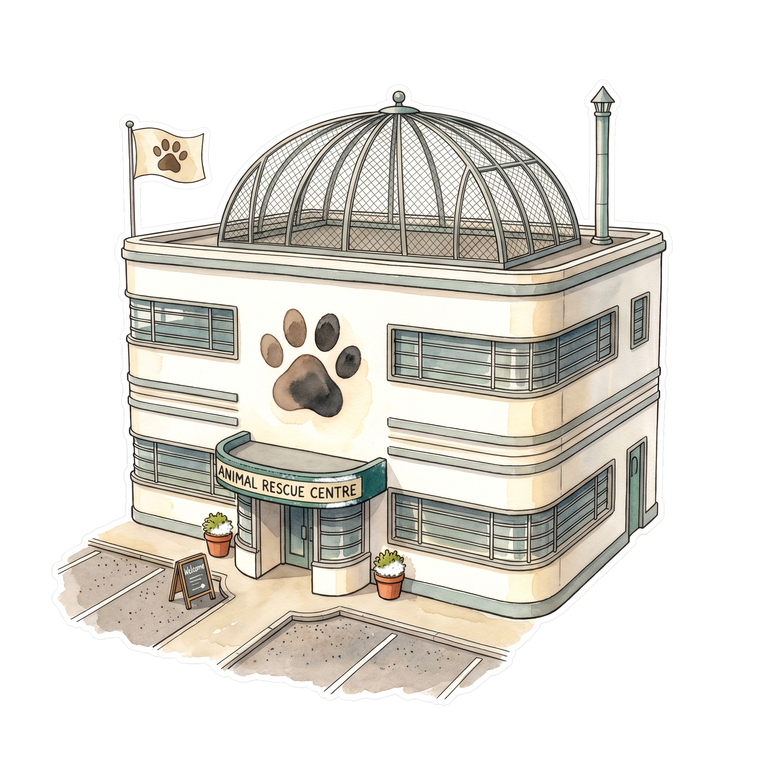

World map
A.R.C. site
v3 renderer · Tier 1 assets · OSM ground truth
Back to map
A.R.C. — Animal Rescue Centre
Lawn garden
Quiet garden
Hedgehog + Squirrel zone (T2)
Raccoon (T3)
Fox (T6)
Skunk (future)
